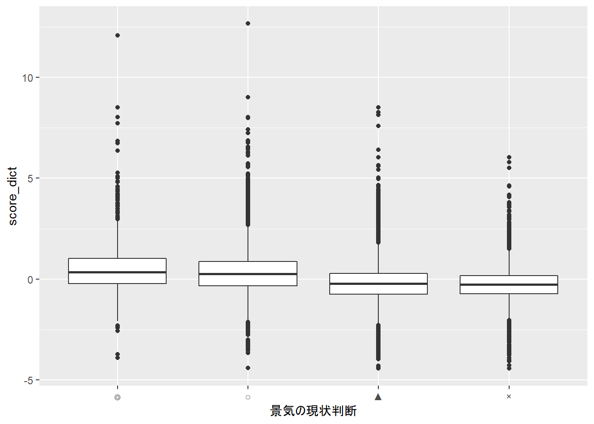
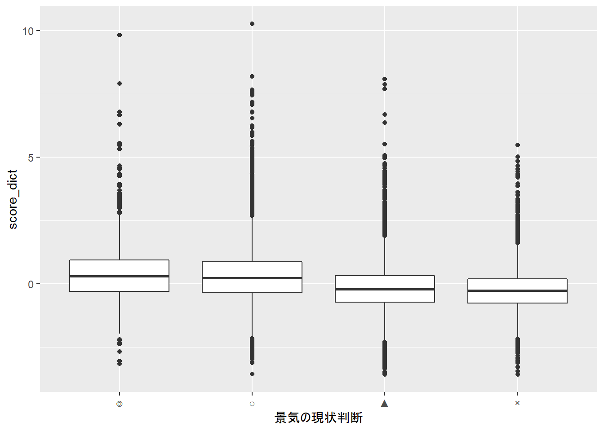

【徹底比較】センチメントスコア算出手法！！ - 第2回
おはこんばんにちは。センチメントスコア算出企画の第2弾です。 今回は辞書ベースのセンチメントスコア算出方法を実践します。
1. 分析手法の説明
辞書ベース手法とは
辞書ベース手法はその名の通り、辞書を用いてセンチメントスコアを算出する手法です。各単語が持つ感情極性(ここでは、ポジティブな意味かネガティブな意味かを表す)をスコア化したものをあらかじめ辞書として保存し、文書内で出現した単語とそれぞれの辞書スコアを紐付け、(何らかの方法で)集計することで、その文書全体のセンチメントスコアを算出します。
センチメントスコアを参照する辞書
上記においては、スコアをどのように算出するのかが重要になります。現在公開されている日本語辞書の中で有名な東京工業大学の高村研究室が作成した辞書(Takamura, Inui, and Okumura 2005)では以下のような方法で算出を行っているようです(原典はこちら)。
まず，辞書，シソーラス（類義語辞典），コーパスデータを用いて，極性が同じになりやすい単語ペアを抽出し，そしてそれらのペアを連結することにより巨大な語彙ネットワークを構築します．たとえば，「良い」と「良好」が類義語関係にあるので，この二単語を結ぶなどの作業を行います．ここで，単語の感情極性を電子スピンの方向とみなし，語彙ネットワークをスピン系とみなして，語彙ネットワークの状態（各スピンがどの方向を向いているか）を計算します．この計算結果を見ることにより，単語の感情極性がわかるのです．
こちらの辞書はHPで公開されており、非営利目的であれば利用が可能のようです。ちょっと覗いてみましょう。
## 単語 読み仮名 品詞 感情極性スコア
## 1 優れる すぐれる 動詞 1.000000
## 2 良い よい 形容詞 0.999995
## 3 喜ぶ よろこぶ 動詞 0.999979
## 4 褒める ほめる 動詞 0.999979
## 5 めでたい めでたい 形容詞 0.999645
## 6 賢い かしこい 形容詞 0.999486
センチメントスコアは1から-1までを取り、1に近いほどポジティブを表します。最もポジティブな単語は「優れる」となっていることがわかります。
辞書ベース手法の利点・欠点
<利点>手法のわかりやすさ/教師データが不要👍
辞書を利用する良い点は、手法のわかりやすさと教師データを必要としない点です。特に後者は辞書ベースならではの長所です。通常、文書分類器を作成するためには、その文書がポジティブ・ネガティブのどちらであるかという正解ラベルの付いた教師データが必要です。必要なデータは文脈にもよると思いますが、少なくとも100件は必要でしょう。これは分析者が少なくとも100件以上の文書を読んで、手作業でラベルを付与しなければならないことを意味します。
<欠点>辞書の性能に結果が大きく依存する👎
短所としては、特殊な文脈におけるセンチメントスコアを参集する場合は専用の辞書が必要になるという点です。辞書ベースの分類法の場合、辞書に含まれない単語はセンチメントスコアへ影響を全く与えません。また、一般に公開されている辞書はwikipedia等のオールジャンルの文書を学習することによって開発されていることが多いため、感情極性が文脈に対してニュートラルになっています。よって、例えば金融等の文脈におけるセンチメントスコアを算出する場合、専門用語の感性極性が0となったり、文脈を考慮した感性極性が得られないことから、直感と異なる結果が出る可能性があります。
2. 辞書ベース手法の実践
使用データ
では、実際に辞書ベース手法を用いて、景気ウォッチャー調査の文章からセンチメントスコアの抽出を試みます。景気ウオッチャー調査では、タクシー運転手や小売店の店主、旅館の経営者など景気に敏感な方々(景気ウオッチャー)に対して、5段階の景況感とその理由を毎月アンケートしています。5段階は、「良い(◎)」、「やや良い(○)」、「変わらない(■)」、「やや悪い(▲)」、「悪い(×)」となっています。
データを覗いてみると、以下のようになっています。
| 基準年 | 基準日 | 景気の現状判断 | 業種・職種 | 判断の理由 | 追加説明及び具体的状況の説明 |
|---|---|---|---|---|---|
| 2016 | 1月31日 | ◎ | 旅行代理店（従業員） | 販売量の動き | ・店頭の取扱額が前年比約120％と好調であった。 |
| 2016 | 1月31日 | ◎ | 観光名所（従業員） | 来客数の動き | ・当施設の利用乗降客数は１月26日時点で前年比130.1％となっており、１月としては過去最高の利用乗降客数になることが確定したほどの入込状況にある。 |
| 2016 | 1月31日 | ○ | 一般小売店［酒］（経営者） | 単価の動き | ・年末の消費の反動もあってか、客の動きがやや鈍い。ただ、相変わらず高額商材が売れているということもあり、売上はそれなりの金額をキープしている。 |
| 2016 | 1月31日 | ○ | 百貨店（売場主任） | お客様の様子 | ・外国人観光客による売上が前年比152％と好調を継続しているほか、来客数が前年比102％と好調を維持している。月半ばに停滞した売上も下旬に入ってから回復傾向にあり、定価品、バーゲン品とも前年を上回っている。 |
| 2016 | 1月31日 | ○ | 百貨店（担当者） | 来客数の動き | ・積極的に景気が上向きにあるとまではいいづらいものの、３か月前との比較では改善している。 |
| 2016 | 1月31日 | ○ | 百貨店（販売促進担当） | それ以外 | ・気温が平年並みとなり、これまでの温暖、少雪の状態がみられなくなってきたことで、防寒衣料、雑貨商材を中心に多少改善の傾向がみられる。 |
「景気の現状判断」が景況感を表しており、その判断の理由が「追加説明及び具体的状況の説明」にある形です。よって、前者を教師データ、後者を説明データとする教師あり学習データとして利用することができます。
センチメントスコアの抽出
では、実践です。quantedaというパッケージを用いるため、Rで行っていきます。
まず、前処理です。サンプルデータを読み込みます。
filepath <- r"(C:\Users\hogehoge\Watcher\RawData)"
library(magrittr)
files <- stringr::str_c(filepath, list.files(filepath, pattern = "*.csv"))
sample <- readr::read_csv(files,locale=readr::locale(encoding="Shift-JIS"),show_col_types = FALSE)
sample <- sample[sample$追加説明及び具体的状況の説明!="−"|sample$追加説明及び具体的状況の説明!="＊",]
sample <- sample[sample$景気の現状判断!="□",]
sample$景気の現状判断 <- factor(sample$景気の現状判断, levels=c("◎","○","▲","×"))
次に、sudachiを用いてテキストデータのToken化を行います。Rにはsudachiを使えるパッケージが存在しないので、Pythonパッケージのsudachipyをreticulateで呼び出して使用します。
stopwords_path <- r"(C:\Users\hogehoge\Watcher\marimo-master\yaml\stopwords_ja.yml)"
# sudachiによる形態素解析→Token化
# stopwordsはmarimoを使用
ja_stopwords <- quanteda::dictionary(yaml::read_yaml(stopwords_path))
# コーパス生成
corp <- quanteda::corpus(sample,text_field="追加説明及び具体的状況の説明")
# sudachipy呼び出し→インスタンス化
sudachipy <- reticulate::import("sudachipy")
# 正規化関数定義
sudachi_normalize <- function(tokens){
res <- c()
for(i in 0:(length(tokens)-1)){
res <- append(res,tokens[i]$normalized_form())
}
return(res)
}
# tokenize関数定義
sudachi_tokenize <- function(sentence, mode = "A"){
tokenizer_obj <- sudachipy$dictionary$Dictionary()$create()
mode <- switch(mode,
"A" = sudachipy$tokenizer$Tokenizer$SplitMode$A,
"B" = sudachipy$tokenizer$Tokenizer$SplitMode$B,
"C" = sudachipy$tokenizer$Tokenizer$SplitMode$C,
stop("Only Can Use A, B, C"))
res <- purrr::map(sentence, ~sudachi_normalize(tokenizer_obj$tokenize(., mode)))
return(res)
}
# Token化実行
toks_sent <- corp %>%
sudachi_tokenize() %>%
quanteda::as.tokens() %>%
quanteda::tokens_remove(ja_stopwords, padding = TRUE)
# メタデータをTokenに再付与
quanteda::docvars(toks_sent) <- quanteda::docvars(corp)
このtoks_sentから文書行列を生成します。文書行列とは、単語と文書の関係を表す行列で、各行が単語(token)、各列が文書を表し、各要素は文書中の単語の出現回数となっています。
# 文書行列の生成
dfmt_sent <- toks_sent %>%
quanteda::dfm() %>%
quanteda::dfm_remove(pattern="") %>%
quanteda::dfm_trim(min_termfreq = 10)
文書行列dfmt_sentと各単語のスコアベクトルの内積を取り、文書のセンチメントスコアを算出します。
# 単語感情極性対応表
PNdict <- read.delim("http://www.lr.pi.titech.ac.jp/~takamura/pubs/pn_ja.dic",header=FALSE,sep=":")
# 辞書の並びに合わせて文書行列の列を入れ替える。
dfmt_sent_arranged <- quanteda::dfm_match(dfmt_sent, PNdict$V1)
# 文書のセンチメントスコア算出
n <- unname(quanteda::rowSums(dfmt_sent_arranged))
score_dict <- scale(ifelse(n>0, quanteda::rowSums(dfmt_sent_arranged %*% PNdict$V4)/n, NA))
sample_with_score_dict <- sample %>% cbind(score_dict)
サンプルデータを抜き出して、センチメントスコアを観察してみましょう。
sample_with_score_dict %>%
head() %>%
knitr::kable() %>%
kableExtra::kable_styling(bootstrap_options = c("striped"))
| 基準年 | 基準日 | 景気の現状判断 | 業種・職種 | 判断の理由 | 追加説明及び具体的状況の説明 | score_dict |
|---|---|---|---|---|---|---|
| 2016 | 1月31日 | ◎ | 旅行代理店（従業員） | 販売量の動き | ・店頭の取扱額が前年比約120％と好調であった。 | 1.1372119 |
| 2016 | 1月31日 | ◎ | 観光名所（従業員） | 来客数の動き | ・当施設の利用乗降客数は１月26日時点で前年比130.1％となっており、１月としては過去最高の利用乗降客数になることが確定したほどの入込状況にある。 | -0.7233374 |
| 2016 | 1月31日 | ○ | 一般小売店［酒］（経営者） | 単価の動き | ・年末の消費の反動もあってか、客の動きがやや鈍い。ただ、相変わらず高額商材が売れているということもあり、売上はそれなりの金額をキープしている。 | -0.9988214 |
| 2016 | 1月31日 | ○ | 百貨店（売場主任） | お客様の様子 | ・外国人観光客による売上が前年比152％と好調を継続しているほか、来客数が前年比102％と好調を維持している。月半ばに停滞した売上も下旬に入ってから回復傾向にあり、定価品、バーゲン品とも前年を上回っている。 | 1.1159495 |
| 2016 | 1月31日 | ○ | 百貨店（担当者） | 来客数の動き | ・積極的に景気が上向きにあるとまではいいづらいものの、３か月前との比較では改善している。 | 3.2269249 |
| 2016 | 1月31日 | ○ | 百貨店（販売促進担当） | それ以外 | ・気温が平年並みとなり、これまでの温暖、少雪の状態がみられなくなってきたことで、防寒衣料、雑貨商材を中心に多少改善の傾向がみられる。 | 0.0416559 |
2行目の文章は明らかにポジティブですが、なにが影響したのかネガティブ寄りの判定になっていますね。また、顕著なのが3行目で「鈍い」という単語に引っ張られ、ネガティブなセンチメントを抽出しやすくなっています。この文章の本意は「ただ・・・」という逆接以降の文章ですが、文脈や語順が捉えられないために正しい情報を引き出すことができていません。5行目は「積極的」、「上向き」、「改善」といった単語を検知し、かなりポジティブなセンチメントがあるという判定をしていますが、「積極的に景気が上向きとはいいづらい」というネガティブな文脈を捉え切れておらず、過大評価となっています。
# 結果の可視化
library(ggplot2)
ggplot(sample_with_score_dict, aes(x=景気の現状判断,y=score_dict)) + geom_boxplot()

「景気の現状判断」毎にboxplotを書いてみましたが、ぱっと見はあまり変わらない結果になりました。 ほんの少し緩やかに右下がりのような気もしますが、文書分類可能な結果ではないことがわかります。
(追加検証)tf-idfを用いた算出
上記の分析では単語の出現回数を利用していましたが、tf-idfを用いた分析も行うことにします。tf-idfとは、term frequency-inverse document frequencyの略で、情報検索やテキストマイニングでよく使われる重みのことです。この重みは、ある単語がコーパス1の中の文書にとってどれだけ重要かを評価するために使われる統計的尺度で、その特徴量は文書中の単語の出現回数が増加するほど上昇しますが、コーパス中の単語の頻度によって相殺されます。例えば、迷惑メールを分類することを意図した電子メールのコーパスにおいて、「お知らせ」や「ニュース」などは出現頻度が高い一方でどの文書にも出現するため、迷惑メールを特定するという点においては重要度は高くありません。一方で、「当選」や「今だけ！」などはコーパス上にはそこまで出現頻度が高くない単語であるものの、迷惑メールの文章中には頻度が高く出現すると考えられます。tf-idfでは後者の単語の特徴量が高くなるように定義されています。
tf-idfの計算方法はtfとidfに分かれます。
- tf: Term frequency 単語が文書中にどれだけ頻繁に出現しているかを測定するもの。文書の長さはそれぞれ異なるため、長い文書では短い文書よりはるかに多くの用語が出現する可能性があります。そのため、正規化の方法として、単語頻度を文書の長さ（文書内の単語総数）で割ることがよくあります。
$$ tf(t) = \frac{文章内の単語tの出現回数}{文章内の単語総数} $$
-idf: Inverse Document Frequency ある単語がコーパス内でどの程度希少であるかを測定するもの。「です」、「は」、「が」などの頻出語を減らして、希少語を増やす意図があります。
$$ idf(t) = \log(\frac{コーパス内の文書総数}{単語tを含む文書数}) $$
rで実装してみます。tf-idfはquanteda::dfm_tfidf()で計算できます。引数には、文書行列を渡します。そのほかは上記の分析と同じです。
# tf-idf版文書行列の生成
dfmt_tfidf_sent <- dfmt_sent %>% quanteda::dfm_tfidf()
# 辞書の並びに合わせて文書行列の列を入れ替える。
dfmt_tfidf_sent_arranged <- quanteda::dfm_match(dfmt_tfidf_sent, PNdict$V1)
# 文書のセンチメントスコア算出
n <- unname(quanteda::rowSums(dfmt_tfidf_sent_arranged))
score_dict <- scale(ifelse(n>0, quanteda::rowSums(dfmt_tfidf_sent_arranged %*% PNdict$V4)/n, NA))
sample_with_score_dict <- sample %>% cbind(score_dict)
先ほどと同じようにサンプルを抜き出してみます。
sample_with_score_dict %>%
head() %>%
knitr::kable() %>%
kableExtra::kable_styling(bootstrap_options = c("striped"))
| 基準年 | 基準日 | 景気の現状判断 | 業種・職種 | 判断の理由 | 追加説明及び具体的状況の説明 | score_dict |
|---|---|---|---|---|---|---|
| 2016 | 1月31日 | ◎ | 旅行代理店（従業員） | 販売量の動き | ・店頭の取扱額が前年比約120％と好調であった。 | 0.1641589 |
| 2016 | 1月31日 | ◎ | 観光名所（従業員） | 来客数の動き | ・当施設の利用乗降客数は１月26日時点で前年比130.1％となっており、１月としては過去最高の利用乗降客数になることが確定したほどの入込状況にある。 | -0.0770581 |
| 2016 | 1月31日 | ○ | 一般小売店［酒］（経営者） | 単価の動き | ・年末の消費の反動もあってか、客の動きがやや鈍い。ただ、相変わらず高額商材が売れているということもあり、売上はそれなりの金額をキープしている。 | -0.8631460 |
| 2016 | 1月31日 | ○ | 百貨店（売場主任） | お客様の様子 | ・外国人観光客による売上が前年比152％と好調を継続しているほか、来客数が前年比102％と好調を維持している。月半ばに停滞した売上も下旬に入ってから回復傾向にあり、定価品、バーゲン品とも前年を上回っている。 | 1.0510362 |
| 2016 | 1月31日 | ○ | 百貨店（担当者） | 来客数の動き | ・積極的に景気が上向きにあるとまではいいづらいものの、３か月前との比較では改善している。 | 2.3897946 |
| 2016 | 1月31日 | ○ | 百貨店（販売促進担当） | それ以外 | ・気温が平年並みとなり、これまでの温暖、少雪の状態がみられなくなってきたことで、防寒衣料、雑貨商材を中心に多少改善の傾向がみられる。 | 0.8152262 |
傾向は先ほどの分析とさほど変わらないように見受けられます。 boxplotの結果も見てみましょう。
# 結果の可視化
library(ggplot2)
ggplot(sample_with_score_dict, aes(x=景気の現状判断,y=score_dict)) + geom_boxplot()

右下がりの傾向が強くなったかもしれません。ただ、依然として景気判断別に見たスコアの分布は差がなく、文書分類ができる精度ではないことがわかります。
3. 終わりに
最も簡易な手法ということで予想はしていましたが、辞書ベース手法ではセンチメントスコアの抽出はできませんでした。もちろん、私のやり方が悪いのが理由で上手くやれば文書の分類は可能かもしれません。ただ、経済に特化した極性辞書を準備しなければ難しいのではないかというのが、私の感想です。 次はナイーブベイズ分類器を用いた文書分類に取り組みます。 ここまで、読み進めて頂きましてありがとうございました。次回の記事も期待していてください。
Takamura, Hiroya, Takashi Inui, and Manabu Okumura. 2005. “The 43rd Annual Meeting.” In. Association for Computational Linguistics. https://doi.org/10.3115/1219840.1219857.
-
文章を構造化し大規模に集積したもの ↩︎